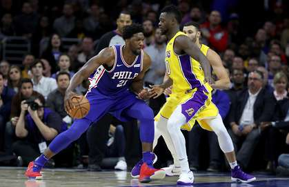
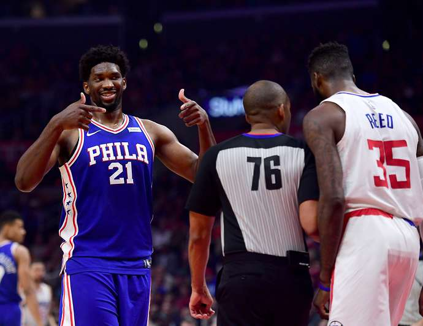

The Philadelphia 76ers were short-handed when they lost to the New Orleans Pelicans on Sunday night, as Robert Covington, T.J. McConnell and Markelle Fultz all missed the game with various injuries.
However, just before tipoff, the Sixers were dealt another tough blow, as star center Joel Embiid was scratched from the lineup with a back ailment. Embiid watched from the bench as his team put up a good fight, but couldn't get over the top, falling to the Pelicans in New Orleans 131-124.  According to Yahoo! Sports, Embiid said after the game that he tried to warm up, but wasn't feeling 100 percent, so he and the coaches decided to hold him out of Sunday's action: "I tried to warm up earlier but I couldn't," Embiid said. "If it was the Finals, I'm sure I could have gone. But we've got 82 games and they don't want me to push if I'm not a hundred percent, so that's what I did." Embiid has obviously dealt with some injury issues over the course of his young NBA career, missing most of his first two seasons before appearing on a very limited basis last season. Therefore, it makes sense that coach Brett Brown and the Sixers' staff would be very cautious with the star big man. The Sixers play again on Tuesday night against the Minnesota Timberwolves in Minneapolis, but Embiid wasn't willing to say whether he'd be ready to go for that primetime game scheduled to show on ESPN or not: "I just got to keep resting for a couple days and see how it feels day-by-day," Embiid said. "But it's been getting better. It's a lot, much better." At 13-13, the Sixers are tied with the New York Knicks for the eighth and final playoff spot in the Eastern Conference as things stand right now. However, without Embiid (and the other injured players mentioned earlier), Philadelphia likely won't be able to keep playing at a .500 pace. Sixers star Ben Simmons said after the loss to the Pelicans that Philly needs to make sure it plays consistently and makes the right basketball plays, even without Embiid and Covington in the lineup (via ESPN.com): "We have to be more consistent and make the right plays every time," Simmons said. "When we make mistakes and do not have guys like Joel and Cov to make up for it, it gets tough. We have to just come together as a team and get through it." Beating the Timberwolves in Minnesota on Tuesday night won't be easy, but the Sixers, with or without Embiid, need to prove they can pick up a big win on the road.